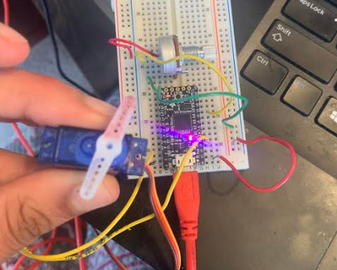

Introduction to Internet of Things!
Week 8, Internet of Things
This week we talked about the internet of things in class. Specifically, we talked about how we can get one arduino to send a signal to another arduino, so we can have two arduinos responding to each other. My goal this week was to 1) further learn how to use output and input devices I hadn't tried yet (specifically the RGB LED and the potentiometer), and also setup a system that used the internet of things to communicate between two arduinos.
Communication between two arduinos
The first thing I needed to do was understand, how can one arduino send a signal to another arduino over a wired connection? It's actually as simple as you might think: the "transmitter" arduino has a pin initialized as an output, and this pin can be wired to a pin on the other arduino, the "Receiver",initialized as an input pin. So, when voltage is outputted from the first arduino, the second arduino can read this as an input, and do something in response.
.
Read more about this serial communication and the computer science behind it here
.RGB LED
I knew that I also wanted this week to help me learn more about RGB LEDs, which I've never used before. These LEDs essentially have one red, green, and blue LED inside them, so by tuning the values of each of these LEDS (which run between 0 and 255 bits each), we can get a whole spectrum of colors! Purple, White, Turquoise - it can do it all! There is also a common ground pin (the longest leg of the RGB LED) to complete the circuit.

So, to make this circuit, I used three resistors for each color LED within the RGB LED, and wires connecting these resistors and RGB Legs to analog output pins, and a wire to connect the ground Leg to ground

For the code, most programmers will define a function (named something like setColor(integer, integer, integer) that takes a value between 0 and 255 for the red, green, and blue LEDs and pushes each of these integers to tune the brightness of each individual color. This just makes it easier so that you don't have to set the value of each color LED independently each time. This function looks like:
void setColor(int redValue, int greenValue, int blueValue) {
analogWrite(bluePin, blueValue);
analogWrite(redPin, redValue);
analogWrite(greenPin, greenValue);
}
Overall, my initial go with RGB LEDS looked like:

An Internet of Things System
This RGB LED is cool, but so far doesn't use the Internet of things. I decided it might be cool if the trasmitter arduino (I used a Mattair Samd 11 board) lit up the RGB LED to various colors, and through a wired connection, made the Receiver arduino (I used an Adafruit ItsyBitsy) move a servo motor by some set amount everytime the RGB LED lit up
Okay, so for Internet of Things, we need the code and circuit for each board separately, and something to connect these. I tackled each board individually first.
We already have our RGB LED circuit and code, so we need to program the Adafruit Itsy Bitsy arduino. To do this, I attached a servo motor in the same way as last week (one lead to ground, one to high voltage, and one to some output pin). Using the same servo motor library and functions as last week's code, I programmed this servo motor to move in increments of 30 degrees when the itsy bitsy arduino received some input voltage at a digital read pin
To connect the two arduinos, I attached a wire from the SAMD board's output pin to the itsybitsy's input pin, defined in the code. I also attached the Vbat itsybitsy pin to the common 5V positive voltage line from the SAMD board, to power the arduino. I then added a line in the setColor function of the SAMD board to send an output voltage to the pin that is wired to the other arduino.
This was a lot of words, so let's take a look at what this circuit actually looks like
You can see the two individual arduino circuits, connected by this green wire.
And overall, the Internet of Things connection worked, and we had a system that moved a servo motor by steps of 30 degrees whenever an RGB LED changed colors
One more project - a Potentiometer tuned Servo Motor
If you recall, in the beginning of this week, I mentioned I wanted to also learn how to use a potentiometer. A potentiometer worked by having three pins, one connected to ground, one to 3V, and one to an anaolog input pin. Essentially, as you turn the potentiometer, it lets different amounts of voltage through, and converts this voltage to a value between 0 and 1023 (recall that 2 to the tenth power is 1024 so these many values makes some computer-logical sense). This value is then sent to the analog input pin.
I wanted to use this analog input to turn the servo motor, that I already had hooked up in a circuit, by some amount, so that by turning the potentiometer fully in one direction and back the other way, I could do the same to the servo motor.
To do this, I learned about a new function called the map function. This maps values between one range to values between another range. So, I could map the potentiometer values between 0 and 1023 to the servo motors values between 0 and 180 degrees. This function is map(val, 0, 1023, 0, 180), and I sent this value to the servo motor function to move the servo motor to this position.
Altogether, this looked like:

As you can see, the potentiometer works like a "knob" moving the servo motor smoothly as we turn it.
That's it for this week! Next week we will continue our exploration of the Internet of Things with bluetooth and radio connections!